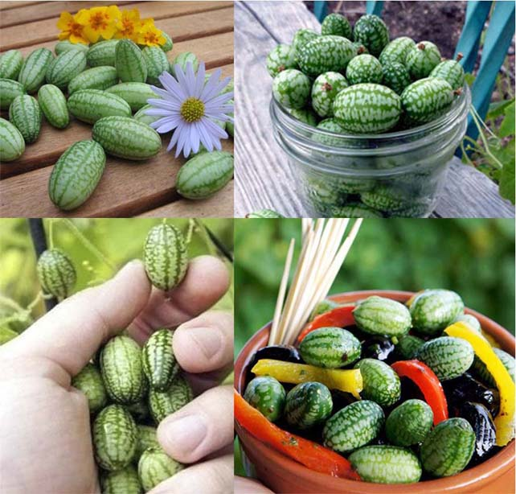

Маленькие арбузы

Самые маленькие арбузы в мире – Пепкунос.
Несмотря
на то, что эти микро-арбузы выглядят как продукт GMO, они на
100% натуральны и появились задолго до того, как человек
научился генной инженерии. Арбузы-огурцы изначально
произрастали в Южной Америке, размер которых составлял 2 на 3
см.
Мини арбузы имеют необычный вкус, который схож со вкусом огурцов. Очень часто данный сорт используют в качестве закуски или в составе овощных салатов.
Впервые, этот вид был привезен в Европу голландской компанией в 1987 году. Через некоторое время эта компания стала заниматься выращиванием маленьких арбузов и продажей семян. В настоящее время выращиванием микро арбузов занимаются азиатские страны. Время созревания арбузов 2-3 месяца, один куст дает от 50 до 100 плодов. Семена маленьких арбузов продаются производителями в Голландии, цена за упаковку составляет от 50 долларов. По своей сути мышиный арбуз это многолетняя травянистая лиана, длинна которых достигает 3х метров. Выращивают лианы при температуре воздуха 25-30 градусов и обильном поливе – раз в 2 дня.
На
википедии данный вид арбуза имеет название Мело́трия шерша́вая
и относиться как и арбуз обыкновенный к семейству тыквенных.
Лианы имеют хорошо развитую корневую систему. Клубни данного
растения также употребляют в пищу, по вкусу и форме они
напоминают батат (сладкий картофель). Однако корни быстро
портятся и не могут храниться как обычный картофель, их
употребляют в течении нескольких дней после выкапывания.